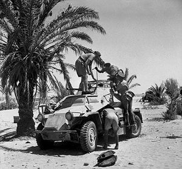
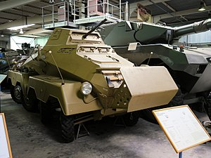
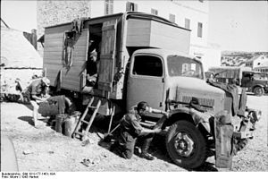
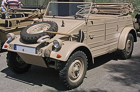
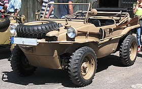

Armoured cars
SdKfz 221 Leichter Panzerspähwagen
Designed to meet operational requirements including reliability, run on a variety of grades of fuel, simple construction and good off-road performance the first such vehicle was the Sd Kfz 221 but this proved too small and too lightly armed, so in 1936-37 a heavier version was planned, using one of two standard chassis for four-wheel armoured cars, one with a front-mounted engine, the other rear-mounted version, was used in the Sd Kfz 222, which became the standard light armoured car in German army service until the defeat of Nazi Germany. The vehicles were developed by Eisenwerk Weserhütte of Bad Oeynhausen by using the chassis of the type Horch 108 standard heavy off-road car with an angled armoured body and turret. Chassis were built by Horch (Auto Union) in Zwickau and assembled by F. Schichau of Elbing and Maschinenfabrik Niedersachsen in Hanover-Linden. The rear-mounted petrol engine was originally a 3.5 Litre Horch V8 with 75 PS (55 kW; 74 hp) (Ausf. A chassis); from 1942, this was replaced by a 3.8 Litre with 90 PS (66 kW; 89 hp) (Ausf. B chassis), giving it a road speed of 80 km/h (50 mph) and a cross-country speed of 40 km/h (25 mph). It had a maximum range of 300 km (186 mi). Used by the reconnaissance battalions (Aufklärungs-Abteilung) of the Panzer divisions, the type performed well enough in countries with good road networks, like those in Western Europe. However, on the Eastern Front and North Africa, this class of vehicle was hampered by its relatively poor off-road performance.
SdKfz 231 Schwere Panzerspähwagen
The heavy Panzerspähwagen was a large but very fast and highly versatile addition to the German Army. The original 6 Rad (6 wheel) versions were based on a 6x4 truck with an armoured body, but by 1937 they were being replaced by the 8 Rad versions. During the replacement, the Sd.Kfz. (Sonderkraftfahrzeug, "special vehicle") numbers were carried directly over; differentiation is made by the addition of 6-Rad or 8-Rad in the vehicle's name. These vehicles were used throughout the war in various guises and first saw combat in the campaign against Poland and in the Battle of France. Later, they saw use in both the USSR and North Africa campaigns. Extreme climatic conditions in both these areas proved too severe for the vehicle. In the USSR, adverse ground conditions immobilized 150 Sd.Kfz 232s during the first wet season of the campaign.[citation needed] The speed of the eight-wheeled cars made them the best scouting vehicles that Rommel had for long range reconnaissance across the wide desert territory.
Utility vehicles
Mercedes-Benz L3000
The Mercedes-Benz L3000 was a 4x2 3-ton rear axle drive truck used by Germany in World War II, powered by a Daimler-Benz OM 65/4 74 hp 4-cylinder diesel engine. It was used alongside the Opel Blitz, and proved even more reliable in rough terrain; and was used in all fronts and extensively by the Afrika Korps. It was manufactured in three versions, the L3000, the L3000A, and the L3000S, from 1938 to 1943; by that time more than 27,700 of all versions had been built. This made it the most produced Mercedes-Benz truck of World War II.
Volkswagen Kübelwagen
Although Adolf Hitler discussed with Ferdinand Porsche the possibility of military application of the Volkswagen as early as April 1934, it was not until January 1938 that high-ranking Third Reich army officials formally approached Porsche about designing an inexpensive, light-weight military transport vehicle, that could be operated reliably both on- and off-road, in even the most extreme conditions. This implied that the Beetle could provide the basis for such a vehicle. Porsche began work on the project immediately, having a prototype of the vehicle ready within the month, but realized during development that it would not be enough to reinforce the Beetle's chassis to handle the stresses that military use would place on it. In order to guarantee adequate off-road performance of a two-wheel-drive vehicle with a 1,000 cc FMCV 1 engine, it would have to be lightweight. In fact, the army had stipulated a laden weight of 950 kg (2,090 lb), including four battle-dressed troops, which meant that the vehicle itself should not weigh more than 550 kg (1,210 lb). Porsche therefore sub-contracted Trutz, an experienced military coachbuilder, to help out with the body design. Developmental testing by the military began after a presentation of the prototypes designated as Type 62 in November 1938. Despite lacking four wheel drive, a mainstay of the American military Jeeps, the vehicle proved very competent at maneuvering its way over rough terrain, even in a direct comparison with a contemporary standard German army 4×4, and the project was given the green light for further development. The vehicle's light weight and ZF self-locking differential compensated for the lack of 4×4 capabilities.
Volkswagen Schwimmwagen
Volkswagen Schwimmwagens used the engine and mechanicals of the VW Type 86 four-wheel drive prototype of the Kübelwagen and the Type 87 four-wheel drive 'Kübel/Beetle' Command Car, which in turn were based on the platform of the civilian Volkswagen Beetle. Erwin Komenda, Ferdinand Porsche's first car body designer, was forced to develop an all-new unitized bodytub structure since the flat floorpan chassis of the existing VW vehicles was unsuited to smooth movement through water. Komenda patented his ideas for the swimming car at the German Patent office. The earliest Type 128 prototype was based on the full-length Kübelwagen chassis with a 240 cm (7.9 ft) wheelbase. Pre-production units of the 128, fitted with custom welded bodytubs, demonstrated that this construction was too weak for tough off-roading, had insufficient torsional rigidity, and easily suffered hull-ruptures at the front cross-member, as well as in the wheel-wells. This was unacceptable for an amphibious vehicle. The large-scale production models (Type 166) were therefore made smaller, and had a wheel-base of only 200 cm (6.6 ft). Schwimmwagens were produced by the Volkswagen factory at Fallersleben / Wolfsburg and Porsche's facilities in Stuttgart; with the bodies (or rather hulls) produced by Ambi Budd in Berlin. 15,584 Type 166 Schwimmwagen cars were produced from 1941 through 1944; 14,276 at Fallersleben and 1,308 by Porsche. Given these numbers, the VW 166 is the most mass-produced amphibious car in history.[citation needed] Only 189 are known by the Schwimmwagen Registry to remain today, and only 13 have survived without restoration work.